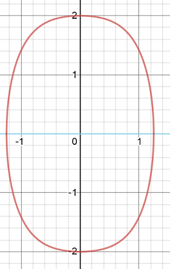

Exercices corrigés - Équations différentielles non linéaires
Enoncé 
Démontrer que l'équation différentielle suivante
$$y'=\frac{\sin(xy)}{x^2};\ y(1)=1$$
admet une unique solution maximale.

Résolution pratique d'équations différentielles non linéaires
Enoncé
Résoudre les équations différentielles suivantes :
$$\begin{array}{lll}
\mathbf 1.\ y'=1+y^2&\quad&\mathbf 2.\ y'=y^2
\end{array}$$
Enoncé
Résoudre les équations différentielles suivantes :
$$
\begin{array}{lll}
\mathbf 1.\ y'+e^{x-y}=0,\ y(0)=0&\quad&\mathbf 2.\ y'=\frac{x}{1+y},\ y(0)=0\\
\mathbf 3.\ y'+xy^2=-x,\ y(0)=0.
\end{array}
$$
Enoncé
Résoudre les équations différentielles suivantes :
$$\begin{array}{lll}
\mathbf 1.\ y'+2y-(x+1)\sqrt{y}=0,\ y(0)=1&\quad&\mathbf 2.\ y'+\frac1xy=-y^2\ln x,\ y(1)=1\\
\mathbf 3.\ y'-2\alpha y=-2y^2,\ y(0)=\frac\alpha2,\ \alpha>0.
\end{array}
$$
Enoncé
Résoudre les équations différentielles suivantes :
$$\begin{array}{lll}
\mathbf 1.\ xy'=xe^{-y/x}+y,\ y(1)=0&\quad&\mathbf 2.\ x^2y'=x^2+xy-y^2,\ y(1)=0\\
\mathbf 3.\ xy'=y+x\cos^2\left(\frac yx\right),\ y(1)=\frac\pi4.
\end{array}$$
Enoncé
On se propose dans cet exercice de résoudre sur l'intervalle $]0,+\infty[$ l'équation différentielle $(E)$
$$y'(x)-\frac{y(x)}{x}-y(x)^2=-9x^2.$$
- Déterminer $a>0$ tel que $y_0(x)=ax$ soit une solution particulière de $(E)$.
- Soit $y$ une solution de $(E)$ différente de $y_0$, définie sur un intervalle $I\subset ]0,+\infty[$. Démontrer que $y-y_0$ ne s'annule pas sur $I$.
- On pose alors $y(x)=y_0(x)-\frac1{z(x)}$. Démontrer que $z$ vérifie l'équation différentielle $(F)$ $$z'(x)+\left(6x+\frac 1x\right)z(x)=1.$$
- Résoudre $(F)$ sur $]0,+\infty[$.
- En déduire les solutions maximales de $(E)$.
Enoncé
Résoudre l'équation différentielle $y'=|y-x|$.
Étude qualitative d'équations différentielles
Enoncé
Soit $y:\mathbb R\to\mathbb R$ une solution de l'équation différentielle
$$3x^2y+(x^3-\sin(y))y'=0.$$
Montrer qu'il existe une constante $C>0$ telle que $x^3y(x)+\cos(y(x))=C$ pour tout $x\in\mathbb R$.
En déduire que $\lim_{x\to \pm \infty}y(x)=0$.
Enoncé
On considère l'équation différentielle $x'(t)=x(t)\sin^2(x(t))$.
- Quelles sont les fonctions constantes solution de cette équation?
- Soit $x$ une solution maximale vérifiant $x(0)=x_0$. Montrer que $x$ est bornée, monotone.
- Démontrer que $x$ est définie sur $\mathbb R$ tout entier,
- Montrer que $x$ admet des limites en $\pm\infty$. Les déterminer.
Enoncé
On considère $y$ la solution maximale de
$$y'=\exp(-ty)\textrm{ avec }y(0)=0.$$
- Démontrer que $y$ est impaire.
- Démontrer que $y$ est définie sur $\mathbb R$.
- Démontrer que $y$ admet une limite finie $l$ en $+\infty$.
- Démontrer que $l\geq 1$.
Enoncé
On considère l'équation différentielle
$$y'=x^2+y^2.$$
- Justifier l'existence d'une solution maximale $y$ vérifiant $y(0)=0$.
- Montrer que $y$ est une fonction impaire.
- Étudier la monotonie et la convexité de $y$.
- Démontrer que $y$ est définie sur un intervalle borné de $\mathbb R$.
- Étudier le comportement de $y$ aux bornes de son intervalle de définition.
Enoncé
Soit $g:\mathbb R\to\mathbb R$ de classe $C^1$ telle que $g(0)=g(1)=0$, et
vérifiant $g(x)<0$ pour tout $x\in]0,1[$. On notera $-\alpha=g'(0)$, $\alpha>0$.
Soit $x_0\in ]0,1[$ et soit $x$
une solution maximale définie sur $]a,b[$ au problème de Cauchy $x'=g(x)$, $x(0)=x_0$.
- Démontrer que $x(t)\in ]0,1[$ pour tout $t\in [0,b[$.
- En déduire que $b=+\infty$ et démontrer que $\lim_{t\to+\infty}x(t)=0$.
- Soit $\beta\in ]0,\alpha[$. Démontrer qu'il existe $C>0$ tel que $x(t)\leq C\exp(-\beta t)$ pour tout $t\geq 0$.
Exercice 13 - Etude qualitative d'un système différentiel ♡ [Signaler une erreur] [Ajouter à ma feuille d'exos]
Enoncé
On considère le système différentiel suivant :
$$\left\{\begin{array}{rcl}
x'&=&2y\\
y'&=&-2x-4x^3
\end{array}\right.$$
- Vérifier que ce système vérifie les conditions du théorème de Cauchy-Lipschitz.
- Soit $(I,X)$ une solution maximale de ce système, avec $X(t)=(x(t),y(t))$. Montrer que la quantité $x(t)^2+y(t)^2+x(t)^4$ est constante sur $I$. En déduire que cette solution est globale, c'est-à-dire que $I=\mathbb R$.
- Soit donc $X=(x,y)$ une solution maximale du système, définie sur $\mathbb R$, et posons $k=x(0)^2+y(0)^2+x(0)^4$. On note $C_k$ la courbe dans $\mathbb R^2$ d'équation
$$x^2+x^4+y^2=k.$$
L'allure de la courbe $C_k$ (dessinée ici pour $k=4$) est la suivante :
On suppose que $x(0)>0$ et $y(0)>0$.
- Dans quelle direction varie le point $M(t)=(x(t),y(t))$ lorsque $t$ augmente et $M(t)$ appartient au premier quadrant $Q_1=\{(x,y)\in\mathbb R^2:\ x\geq 0,y\geq 0\}$?
- Prouver que l'ensemble des points $M(t)$, pour $t\geq 0$, ne peut pas être contenu dans $Q_1$. On pourra utiliser le lemme suivant : si $f:\mathbb R\to\mathbb R$ est une fonction dérivable telle que $f'$ admet une limite non-nulle en $+\infty$, alors $|f|$ tend vers $+\infty$ en $+\infty$.
Exercice 14 - Étude qualitative d'un système différentiel ♡ [Signaler une erreur] [Ajouter à ma feuille d'exos]
Enoncé
Soient $a,b>0$ deux constantes positives et $x_0 > 0$ , $y_0 > 0$ donnés.
Considérons le système différentiel :
$$\left\{
\begin{array}{rcl}
x'&=& -(b+1)x+x^2y+a \\
y'&=&bx-x^2y\\
x(0)&=&x_0\\
y(0)&=&y_0
\end{array}\right.$$
Dans la suite on note $(x,y)$ une solution maximale du système différentiel, définie sur $[0,T_m[$.
- Soit $ \overline{t} \in [0,T_m[$ tel que $x(\overline{t})=0$. Démontrer que $x'(\overline{t})>0$, puis que $ x(t)>0$ pour tout $t\in [0,T_m[$. Démontrer que de même $y(t) >0$ pour tout $ t \in [0, T_m$[.
- En remarquant que $(x+y)'(t)\leq a$ pour tout $t \in [0,T_m[$, démontrer que $T_m =+\infty$
- Calculer la dérivée de $t \rightarrow x(t) e^{(b+1)t}$. En déduire que, pour tout $0<\gamma <\displaystyle\frac{a}{b+1}$, il existe $T_{\gamma }>0$, indépendant de $x_0 >0$ et de $y_0 >0$ tel que $x(t)\geq \gamma$ pour tout $t\geq T_{\gamma}$.
Exercices théoriques
Enoncé
Soit $F:\mathbb R^2\to\mathbb R^2$ une fonction de classe $C^1$, et $f,g:\mathbb R\to\mathbb R$ deux solutions maximales de l'équation
différentielle $y'=F(t,y)$. On suppose qu'il existe $t_0\in\mathbb R$ tel que $f(t_0)<g(t_0)$. Montrer que pour tout
$t\in\mathbb R$, on a $f(t)<g(t)$.
Exercice 16 - Une solution d'une équation différentielle autonome est strictement monotone ♡ [Signaler une erreur] [Ajouter à ma feuille d'exos]
Enoncé
Soit $f:I\to\mathbb R$ une fonction de classe $\mathcal C^1$ sur l'intervalle $I$. Alors toute solution non constante de $y′=f(y)$ est strictement monotone.
Enoncé
Soit $f:\mathbb R^2\to\mathbb R$ une fonction continue, localement lipschitzienne par rapport
à la seconde variable. On appelle
- barrière inférieure une fonction $\alpha:\mathbb R\to\mathbb R$ de classe $C^1$ telle que $\alpha'(t)< f(t,\alpha(t))$ pour tout $t\in\mathbb R$.
- barrière supérieure une fonction $\beta:\mathbb R\to\mathbb R$ de classe $C^1$ telle que $\beta'(t)> f(t,\beta(t))$ pour tout $t\in\mathbb R$.
- Soit $(]a,b[,u)$ une solution de l'équation différentielle $x'=f(t,x)$ vérifiant $u(t_0)=x_0$ où le point $(t_0,x_0)$ est dans l'entonnoir. Montrer que pour tout $t\in[t_0,b[$, le point $(t,u(t))$ est dans l'entonnoir.
- En déduire que si $(]a,b[,u)$ est une solution maximale, alors $b=+\infty$.
- On considère l'équation différentielle $x'=x^2-t$, et $u$ la solution maximale vérifiant $u(4)=-2$. Montrer que $u$ est définie au moins sur $[4,+\infty[$ et qu'elle est équivalente à la fonction $t\mapsto -\sqrt t$ au voisinage de $+\infty$.